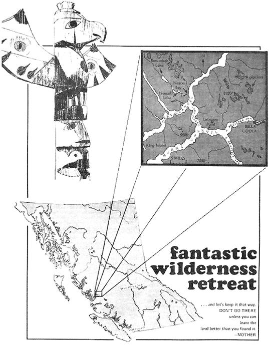
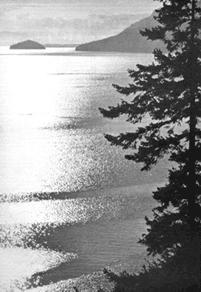

HOMESTEADING IN CANADA
TOM MARSHALLINNOVATOR, BOX 34718, LOS ANGELES,CALIFORNIA 90034
For wilderness retreats or summer anchorages, an especially attractive area is the North Coast of British Columbia - a land of snow capped mountains, dense forests, rushing streams and deep fjords. Its potential advantages include:
Ocean access: Myrian channels, arms and inlets – many extending over 50 miles inland-provide more sea coast than all of continental U.S. Among the almost endless inlets, bays and islands are places a small boat could hide indefinitely.
Geographical isolation: Rugged mountain ranges limit transportation to water, which is slow, and air, which is expensive. Only two roads and one railroad penetrate the region.
Sparse population: The whole North Coast region (roughly from Queen Charlotte Strait to the Alaska panhandle and inland to the coastal divide)-larger than Ohio-has a population of less than 40,000. Most of these people are concentrated around the few cities. Arable land and commercial timber exist only in small pockets in river valleys and deltas, precluding large scale settlement.
In July and August of 1967, I explored some of the land and waterways of this region. My route of travel was by automobile to Bella Coola, then by kayak to Nascall Bay on Dean Channel.
Although Bella Coola lies less than 300 miles from Vancouver, the highway distance is 650 miles. I first drove inland and north to Williams Lake, then northwest on a fair-to-middling graded dirt road across the Fraser Plateau. Separated from the ocean by mountains, this 3,000 foot highland has a climate quite different from the coast. It's more like the higher plateaus of Colorado and Wyoming with mild summers, cold winters and little precipitation. The road to Bella Coola crosses gently rolling land, open forests of lodgepole pine with some Douglas fir, spruce and aspen and an occasional creek or lake. Cattle ranching is the main industry. The few small settlements have a "frontier" look: Log cabins, unpretentious yards and pole fences.
After 250 miles of little variation, the land changes abruptly as the road descends steeply – with several switchbacks – to the Bella Coola valley. Within a few miles, one plunges from the cool, open woods of the uplands into a warmer, humid, dense jungle of giant arbor vitae and Douglas fir. The road winds down the valley past a few logging operations and guest lodges. Then, 20 miles from sale water, the highway becomes paved and wilderness is replaced by farms and homes that look long-settled.
Bella Coola contrasts with the rough and rustic interior settlements, seeming (if one ignores the spectacular snow capped peaks around it) more like a country town of the U.S. south than the trading center for thousands of square miles. The few businesses are scattered over a several block area. Judging from the types of enterprises, tourism is not an important industry.
Prices are surprisingly low, considering Bella Coola's isolation and the small size of the market. A lunch consist ing of ham sandwich, pie and milk cost $0.70, locally baked bread sold for $0.26 a loaf and three pounds of powered milk cost $1.40. (Prices are in Canadian dollars which – at that time-exchanged for about 93 cents U.S.) Gasoline cost $0.48 per Imperial gallon, equivalent to about $0.37 U.S. per U.S. gallon.
My kayak was a 17-foot folding model which weighed 125 pounds complete with optional sloop sailing rig. I transported it to Bella Coola disassembled (parts less than five feet long), put it together on the banks of the river above town and paddled down stream to the channel.
The trip from Bella Coola to Nascall Bay took five days. Four days were consumed struggling the 18 miles down North Bentinck Arm and Burke Channel against strong head winds and often white-capped waves. I traveled these waters only during the early morning when wind and waves were minimum. Even then, hard paddling netted only one knot headway. An attempt at upwind sailing in Burke Channel proved unproductive; the Folbot will go into the wind reasonably well in calm water but not when fighting three-foot waves.
Once beyond Bella Coola, the only signs of man were fishing boats (about a dozen a day), a couple of logging operations and the remains of piers, log booms and cabins in some of the bays.
The shores are mostly low cliffs with some pebbly-to-rocky beaches in the bays. On overnight stops I either dragged the Folbot up a beach above the tidal zone (up to 15 feet) or tied up offshore. One of the most attractive camping places was a little cove (not shown on the land-status map) just northeast of Lalakata Point. It was a near-ideal combination of sandy beach, trickling creek and hillsides covered with black raspberries and red bilberries.
On the fifth day I passed Mesachie Nose, turned into Labouchere Channel and – for a change – had calm water and a light tailwind. With mainsail alone I ghosted downwind to Dean Channel and across on an easy broad reach to Nascall Bay. Dean Channel was calmer than Burke had been although a rain squall caused some rough moments.
Half mile-long Nascall Bay has the shape of an hourglass opened on one end. A boat can anchor in the back portion out of sight of Dean Channel or the front. The Bay is variously bordered by grassy, swampy and rocky beaches. In one spot, there are even sheer cliffs.
Nascall Hot Springs lies near the mouth of the bay. About ten years ago, according to reports, Crown Zellerbach Corp., which has a large pulp mill at Ocean Falls 20 miles to the west, surveyed Nascall Valley for hydroelectric potential. The survey crew built a bathhouse: A shack whose sole furnishing is a bathtub set into the floor. A pipe runs back to the hot spring. Since its construction, the bath has been used and maintained by passing pleasure and fishing craft. During the three days I was in and around the bay, at least a dozen boats stopped.
The basic Folbot proved to be seaworthy, riding easily with the largest non-breaking waves encountered. Under the same conditions, 40-foot fishing boats pounded heavily. With a waterproof kayak cover (which I lacked) to prevent swamping, I would trust it on the open ocean in average weather. However, the sailing gear has some design faults. A small outboard motor (available as an option) would facilitate cruising.
Hip boots are desirable for travel along rivers and through swamps. A hand gun, although illegal in Canada, is much easier to carry through the woods (for defense) than is a rifle.
One sixteenth-inch netting will stop horse flies and mosquitos but not the gnats which live on the coast (I encountered none in the interior). Several layers of loose clothing plus liberal and frequent applications of repellant on exposed skin kept the bugs at bay during the day. Insect pests are about as common as in more moist portions of the U.S.
On my return trip I found a light northeast breeze down Dean Channel and sailed across to Labouchere where I encountered a light headwind: But, with calm water and a following wind down the zigzag channel, I made good headway with minimum tacking. When I reached Burke Channel, the sails caught the prevailing southwest wind and the boat was off racing the waves. Sometimes surfing on long swells for a minute at a time and sometimes crashing through short chop, the little craft ran before the wind.
At low elevations in the Bella Coola area, forest grows everywhere except on naked rock, tidal flats and swamps (any natural clearing) in a river valley will be marsh, not dry grassland). Common trees include western hemlock, giant arbor vitae, Sitka spruce, western white birch, Douglas fir, yellow cypress and black cottonwood. Lodgepole pine also grows on the more exposed slopes.
There is little undergrowth in the shade of some of the denser stands of trees on delta lands. Elsewhere the tanglefoot is heavy and includes young hemlock, bilberries, ferns, mosses, smilacinas and – in wet spots – devil's club. The rocks I noted were exclusively igneous and many showed intrusions.
Blue and red bilberries, salmonberries and red and black raspberries are abundant. The blue bilberry (Vaccinium ovalifolium Sm), which makes up most of the undergrowth in many places, is related to and bears fruit shaped like blueberries. Blue bilberries are usually mildly sweet but some bushes (which look no different) bear fruit which tastes weedy or foul. Unlike raspberries, all bilberries on a bush ripen together and remain edible for a long time.
Plantain, fireweed, clover, ferns and the various conifers are a few of the edible greens found near Bella Coola. The only poisonous plants I noticed were water hemlock and baneberries (a few in swampy areas).
Salmon were running in Dean Channel while I was there. Mussels grow on some rocky beaches but, near large rivers, the water is apparently too fresh. I did not see large game animals (perhaps they move to higher ground in summer) although a few squirrels were encountered.
Due to the highly irregular terrain, coastal British Columbia shows great climatic variation and each river valley, inlet or channel essentially has one or more local climates. A few generalizations can be made (summers are drier and sunnier than winters, precipitation usually increases with elevation), but many anomalies remain.
For instance Bella Coola, at the head of an inlet, averages 55 inches of precipitation a year. Ocean Falls, 50 miles to the west and also at the head of an inlet, averages 164 inches. Bella Bella, 30 miles still further west and on a channel, receives 99 inches.
Judging from plant maturity and comments by local folk (weather stations being few and far between), Dean Channel has about the same summer weather as Bella Coola, but a colder winter since it is more exposed to frigid northeast winds from the interior.
One man said that the high precipitation and cloudiness at Ocean Falls is a localized condition caused by the shape of the valley. He reports that Ocean Falls will be overcast and raining for days at a time while – eight miles away in Dean Channel – the sun is shining.
During my visit in late July and early August, there were stratus clouds in the early morning. They usually cleared by afternoon. There was a build-up of cumulus clouds with occasional rain squalls in late afternoon on a few days. The channels tended to clear earlier and receive less rain than the adjacent land. Temperatures did not exceed 85° F nor fall below 50° F.
The most detailed map available* does not show terrain features smaller than a quarter mile. Aside from that, only a few discrepancies were noted including – if the map be believed – a river which flows uphill (King Island, about Lat. 52° 17' N, Long. 126° 27' W). Perhaps this can be attributed to wishful thinking by the government's Department of Lands, Forests and Water Resources.
During my stay in Canada I was not molested by any large animals, not even that most loathsome of predators – the State bureaucrat. I camped out exclusively, both in the wilderness and relatively settled areas.
I spent ten days on rough waters in a conspicuously small, open and unlicensed boat and my only noteworthy contacts were with a few passing fishermen who solicitously asked if everything was all right. No Canadian equivalent of the Coasf Guard ordered me off the water (During a one-day tryout of the Folbot on Piru Lake, Calif., I was ordered out for not having registration and local permit.)
While many Canadian laws and regulations are as onerous as their U.S. counterparts ON PAPER, enforcement in an area with a population of less than one person per square mile presents something of a problem for even the most determined power seekers.
The Canadian government will not sell outright any waterfront land. This is to "preserve it for recreational use", of course, and poses no problem for the libertarian nomad who intends to be only a squatter.
* Bella Coola, RC, sheet 93D, second status edition, 1962, Department of Lands, Forests and Water Resources, Victoria, B. C, 60 cents. Various maps and nautical charts are also sold by Dominion Map Limited, 626 Howe Street, Vancouver 1, B. C. Mail orders are accepted.
|
 |
 |
|